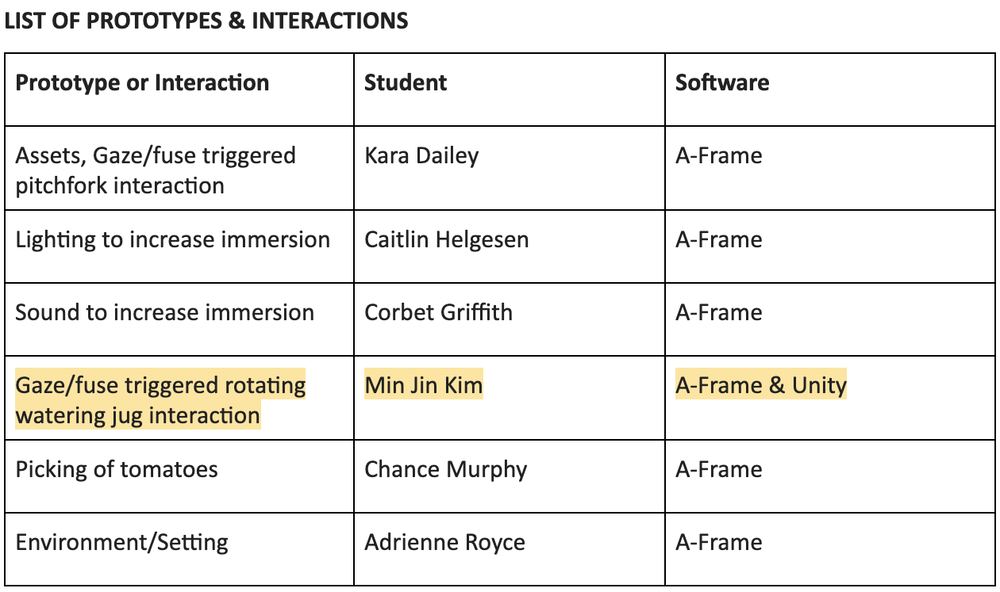

My group decided to create a virtual reality garden application that can be experienced with Google Cardboard. We each were responsible for different parts of the application.

.
While many pick up gardening as a hobby, it can also combat much more serious issues than boredom such as food deserts. The NGA reports that “16 million children in America are struggling with hunger and obesity coupled with poor nutrition remains at epidemic proportions.” Gardening can not only bring nutritional foods to families living in food deserts but often times, gardening is cheaper than going to the grocery markets to buy fresh or organic produce. Research proves that purchasing tomatoes from the store is significantly more expensive; 8 pounds at the grocery store at an average of $2.56 per pound, equates to a total of $20.48 per eight pounds, resulting in $16 in savings!
GrowerTalks did a survey and learned that the top three reasons that make gardening difficult were time constraints, information and education, and space restraints. With the VR Gardening app, we hope to address these concerns. VR has the opportunity to breach an informational gap in learning how to garden. An essential function would be to provide a low-stakes environment to replicate and test variables in a home garden without doing physical damage to actual plants or wallets of its users. We believe that youth and college aged students will be more likely to use a solution like this in VR due to their literacy of technology while also having a higher opportunity of access to HUDs and headsets in general.